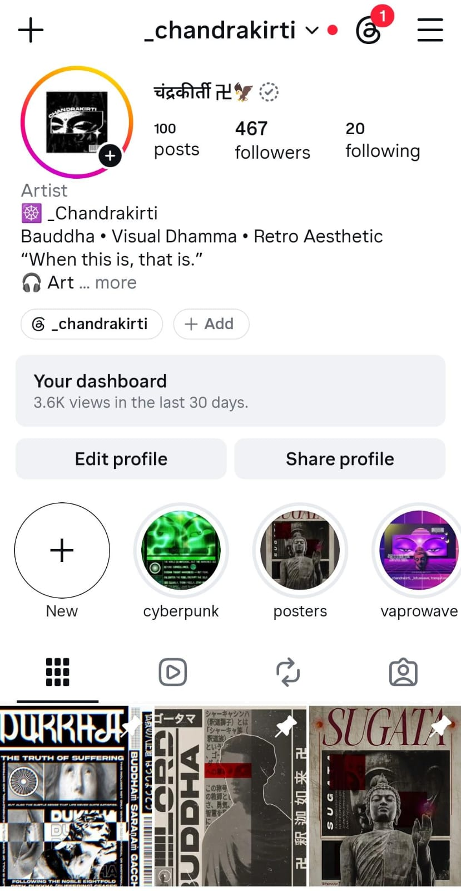
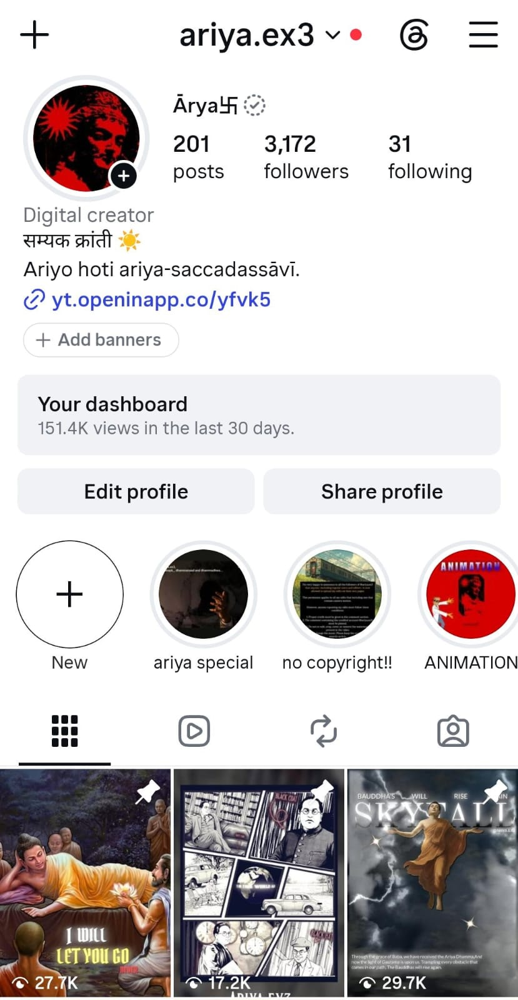

About ariya.ex3
Hello! I am ariya.ex3, an Ambedkarite Buddhist, political philosophical, editor, and the creator of this page.
For the past four years, I have dedicated myself to the restoration and exploration of traditional, rational Buddhism. My journey began in 2022 with an account named dharmakirti, which I later renamed chandrakirti.
The name Chandrakirti (IAST: Candrakīrti; Sanskrit: चंद्रकीर्ति), meaning “Glory of the Moon,” belongs to the renowned Buddhist philosopher Candrakīrti (c. 600–650 CE), a prominent scholar of the Madhyamaka school. Associated with the great monastic centre of Nālandā, he is particularly known for his commentaries on the works of Nāgārjuna and Āryadeva, including the Prasannapadā and the Madhyamakāvatāra.


During my time as chandrakirti, I primarily created and shared retro-aesthetic edits and images centred on Buddhism. This phase helped shape my creative identity and deepen my interest in Buddhist philosophy.
I was also strongly inspired by nagarjuna_1, a philosophical editor who runs the page ariya.aesthetic. His work influenced my creative direction and contributed to the evolution of my own editing style.
In 2025, I started a new page, ariya.ex3, marking another chapter in my journey. Today, I create video edits centred on the Buddha, Dr. B. R. Ambedkar, and the broader philosophical and political ideas associated with their legacies.
Why This Website?
“Short-form edits can communicate powerful ideas through visuals, music, symbolism, and carefully selected words. However, the meaning behind a few seconds of footage can sometimes go much deeper than what appears on the screen.”
I created this website to explain the philosophical reasoning, historical context, political ideas, and ideological foundations behind my edits. I want fellow Ambedkarites, Buddhists, and curious readers to understand not just what my videos portray, but also why they portray it that way.
Beyond my Instagram content, I will also share philosophical reflections, historical discussions, political commentary, and other ideas that deserve more space than a short video can offer.
This website is an extension of my creative work and intellectual journey—a place to question, analyse, discuss, and explore ideas beyond the limitations of social media.
Welcome to ariya.ex3.
Beyond the edit lies the idea. Beyond the image lies the philosophy.
Edits
All videos created for ariya.ex3